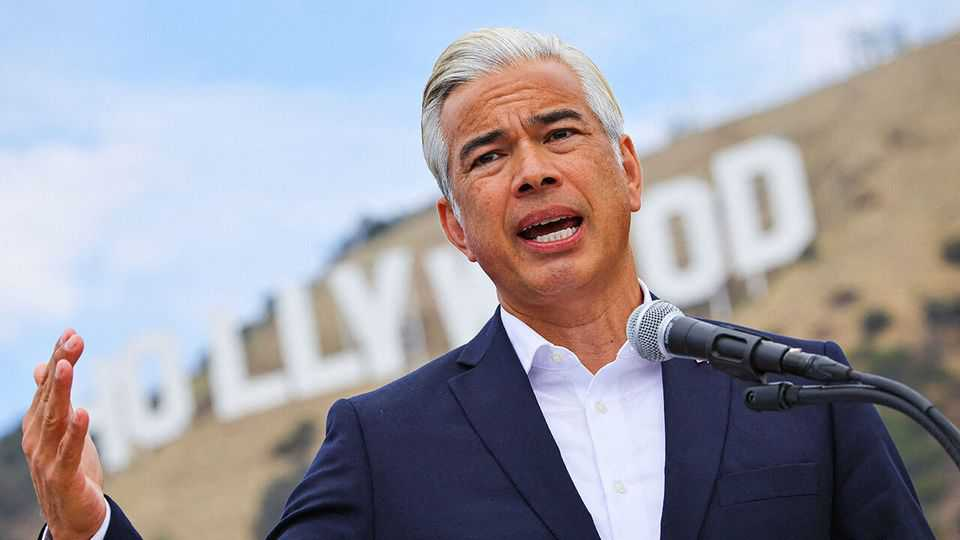

Democrats challenge a big Hollywood tie-up
A dozen states are suing to block Paramount’s merger with Warner Bros
July 16th 2026

THE LONG-RUNNING corporate dramedy over Paramount Skydance’s merger with Warner Bros Discovery has entered a new act. On July 13th Rob Bonta (pictured), California’s top prosecutor, announced that a coalition of 12 attorneys-general would sue to halt the studios’ megadeal. At a press conference in front of the Hollywood sign, he argued that the $111bn merger was illegal and insinuated that David Ellison, Paramount’s boss, was acting like a mafia don. “David Ellison may think this is an offer we can’t refuse,” said Mr Bonta. “But I am here to say he’s wrong.”
Paramount claims that its merger with Warner Bros would allow it to compete with streamers, such as Netflix, which have been eating the studios’ lunch. But instead of considering this broader competition, the states focused on legacy markets in which they say the merger would reduce competition. The complaint, filed in federal court in California, alleges that the deal would give the combined company greater leverage over cinemas and cable distributors, allowing it to extract more favourable terms that could ultimately lead to higher ticket prices and cable bills.
The legal merits will be considered in court, but the lawsuit is part of a bigger saga, too. Antitrust enforcement has long been characterised by bipartisan co-operation. However it is an increasingly political endeavour, on the local and national level.
States are pursuing more aggressive antitrust action. Although that trend predates Mr Trump’s return to office, it has gathered pace as Democratic attorneys-general argue that his administration has become less willing to challenge mergers. “The federal government is no longer a partner in this work,” said Oregon’s attorney-general, Dan Rayfield, in May. States are responding by expanding their own capabilities. An exodus of lawyers from Washington, DC, has strengthened their teams, while California, Colorado and Washington state have begun requiring advance notice of many large mergers. Legislatures elsewhere may follow suit.
That alone does not explain why all 12 attorneys-general who brought the Paramount lawsuit are Democrats. Republican attorneys-general still frequently join such cases. Only recently Tennessee’s Jonathan Skrmetti helped lead a bipartisan antitrust suit against Live Nation, a big concert promoter. But antitrust enforcement is increasingly being used as a way to convey a broader political message, allowing Democratic officials to argue that they are protecting consumers while Mr Trump looks after wealthy allies.
In announcing the suit, Mr Bonta claimed that “antitrust enforcement is a check on billionaires currying favour with the president so he will do their bidding.” Larry Ellison, David’s tech-billionaire father, donated $45m to a non-profit supporting Mr Trump’s re-election in 2024, according to the Wall Street Journal. On “The Town”, a podcast beloved by Hollywood insiders, Mr Bonta also said the lawsuit was about “affordability”, one of the Democratic Party’s favourite buzzwords ahead of the midterm elections.
It is notable, then, that Mr Bonta and the other attorneys-general have made little reference to one aspect of the deal that has worried Democrats: the shift in ownership of two of America’s best known news brands, CBS News and CNN, to the Ellisons. Mr Bonta has denied that a sale of CNN by the combined company could result in a settlement, though he suggested on “The Town” that some members of his party may welcome that idea.
Californians have a particular interest in the deal. State politicians face pressure to help Hollywood, where the merger has turbocharged fears of job losses. Hollywood’s workforce is shrinking as production migrates to cheaper locations such as Canada and Britain. Last year the legislature responded by more than doubling the state’s film and television tax credits, to $750m. Now candidates for governor and mayor of Los Angeles are proposing further incentives. Opposing the Paramount deal is considered another way to help. Hollywood’s powerful labour unions lobbied for months for a legal challenge to the tie-up. The Writers Guild of America West was quick to celebrate the states’ lawsuit, calling the deal “one of the worst proposed mergers we’ve seen”.
Paramount, for its part, has dismissed the lawsuit as “wrong on both the facts and the law”. Semafor, an online news outlet, reported that Mr Ellison’s advisers are nudging him to consider moving Paramount’s headquarters out of California. The rumour could be a bluff to force Mr Bonta to the negotiating table. But the Ellisons have done this before. Larry moved the offices of Oracle, his software giant, from Silicon Valley to Texas in 2020.
The possibility of a Paramount move raises a broader question about how many regulations and costs California can impose before more companies choose to opt out. “We support businesses”, insists Mr Bonta. “We are pro-business.” If that were unquestionably true, perhaps he wouldn’t need to say it twice. ■
Stay on top of American politics with The US in brief, our daily newsletter with fast analysis of the most important political news, and Checks and Balance, a weekly note that examines the state of American democracy and the issues that matter to voters.